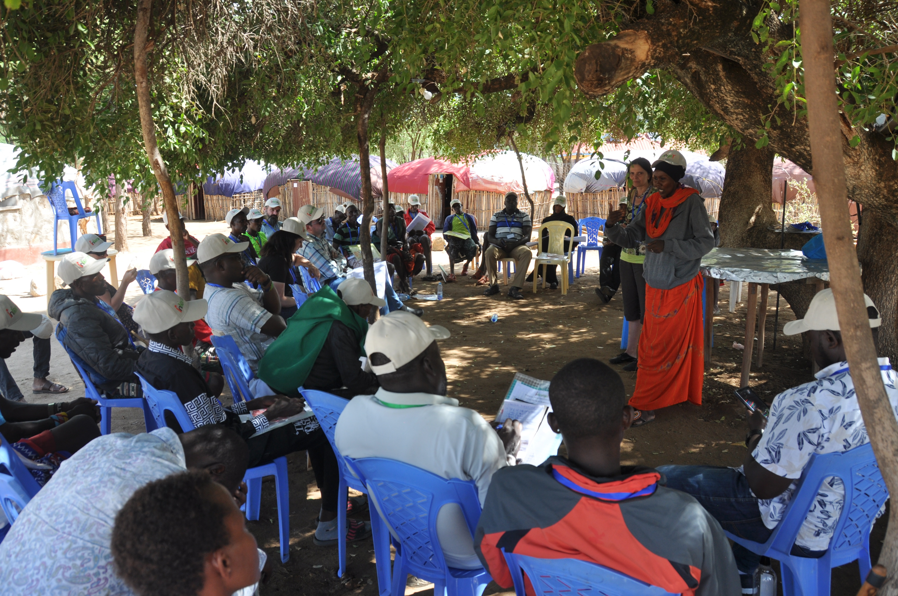
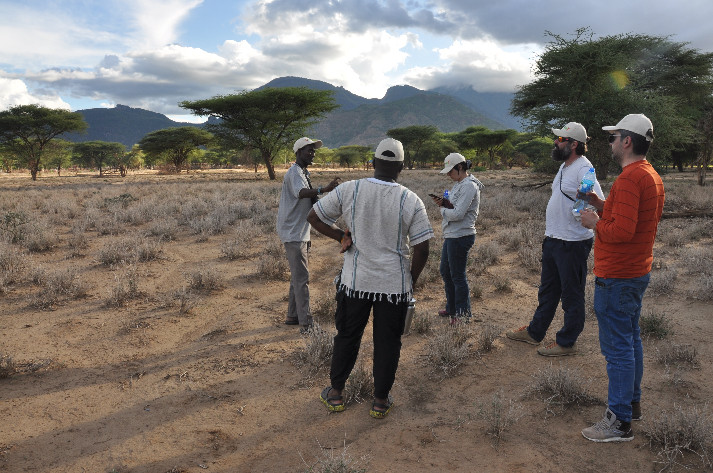
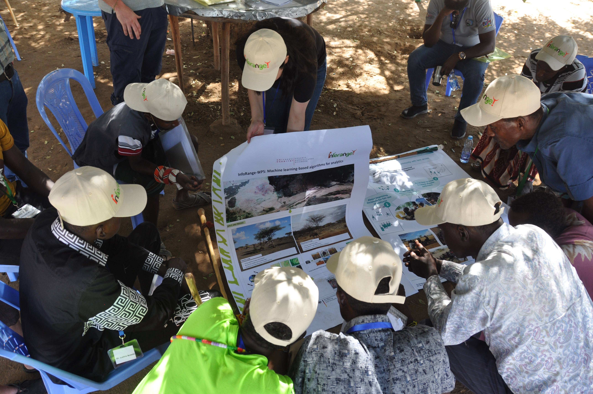
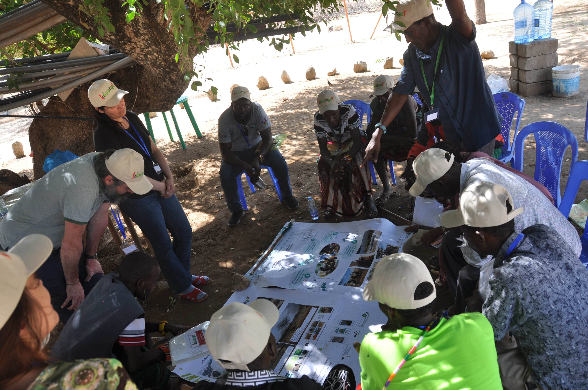
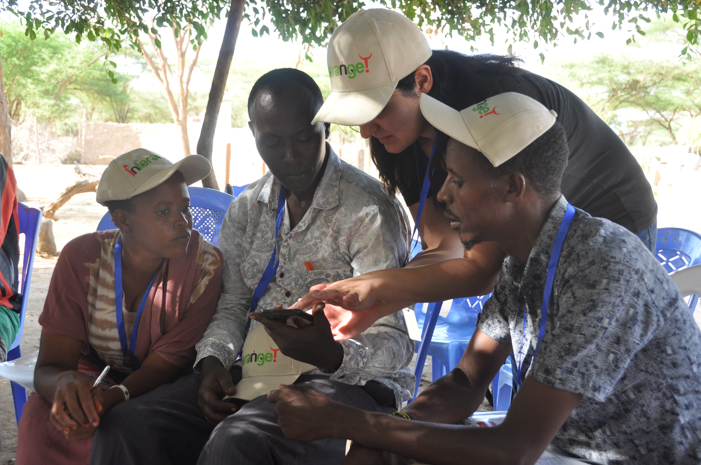
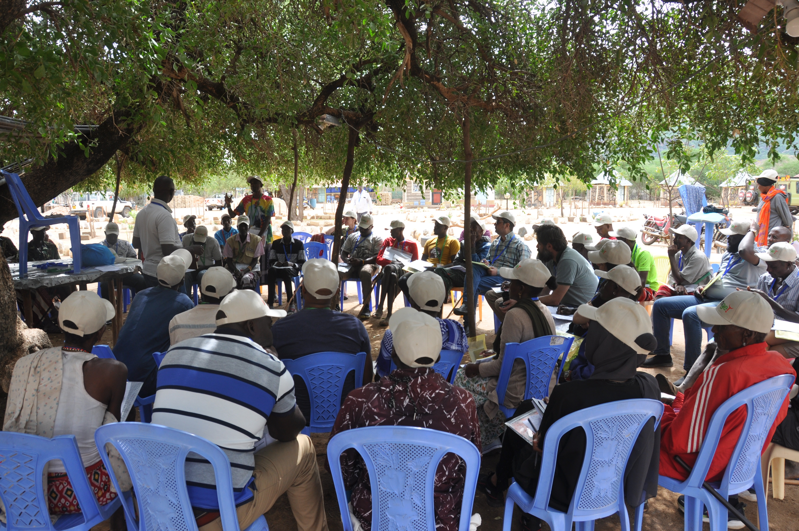

1 / 9

Opening
2 / 9

Group discussion
3 / 9

Group discussion
4 / 9

Consulting the expert
5 / 9

Zakieh presenting
6 / 9

Poster presentation to stakeholers
7 / 9

Zakieh explaining the satellite thing
8 / 9

Stakeholers
9 / 9

View over Ngurunit